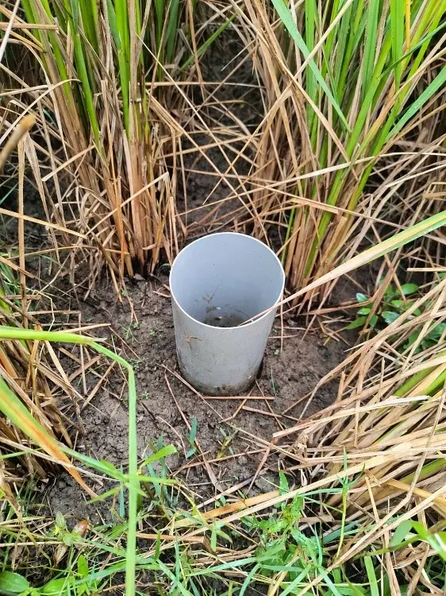
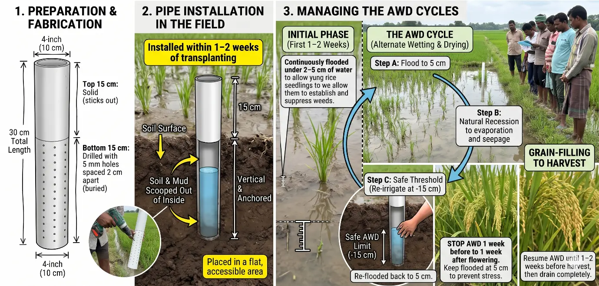

Alternate Wetting and Drying (AWD) is a water-saving technology that farmers can apply to reduce their irrigation water consumption in rice fields without decreasing yield.
In AWD, fields are allowed to dry out intermittently using perforated field pipes (typically 30 cm deep) to monitor water tables rather than staying continuously flooded. The number of days of non-flooded soil between irrigations can vary from 1 to more than 10 days depending on factors such as soil type, weather, and crop growth stage.
Crucially: The AWD method reduces anaerobic conditions in the soil which are responsible for methane production.
Book NowA key practical component of AWD is the field water tube, used to monitor the subsoil water level so that farmers know exactly when to re-irrigate.
The cultivation window is split into distinct stages:
Keep the field continuously flooded under 2–5 cm of water to allow the young seedlings to establish themselves and suppress initial weed growth.
Stop the AWD cycle one week before flowering until one week after flowering. The field must remain continuously flooded to a depth of 5 cm during this period to prevent any crop yield loss from water stress.
After the flowering stage concludes, resume the AWD cycle. Allow the subsoil water level to drop back down to 15 cm before re-irrigating until 1–2 weeks before harvest, at which point the field is drained completely.


Through the adoption of AWD, the programme aims to deliver significant environmental benefits. On average, it is estimated that 24-40% of irrigation water and 20–25% of irrigation expenses can be reduced compared to traditional flood irrigation practices, without any notable decrease in yield.
AWD can cut methane emissions by 50% from rice cultivation, contributing to India's climate commitments under the Paris Agreement.
AWD can cut water usage by 40% without any impact on yield. Water saved: 40 billion Liters (per 10000ha), which is equivalent to:
Promoting more efficient water use, supporting environmentally responsible rice production and straw management, and putting an end to straw burning.
Step-by-Step Methodology:
All emissions are expressed in tonnes of carbon dioxide equivalent (tCO₂e).
Carbon credits issued ≈ verified net ER in tCO₂e
One carbon credit generally represents one metric tonne of verified CO₂-equivalent emission reductions.